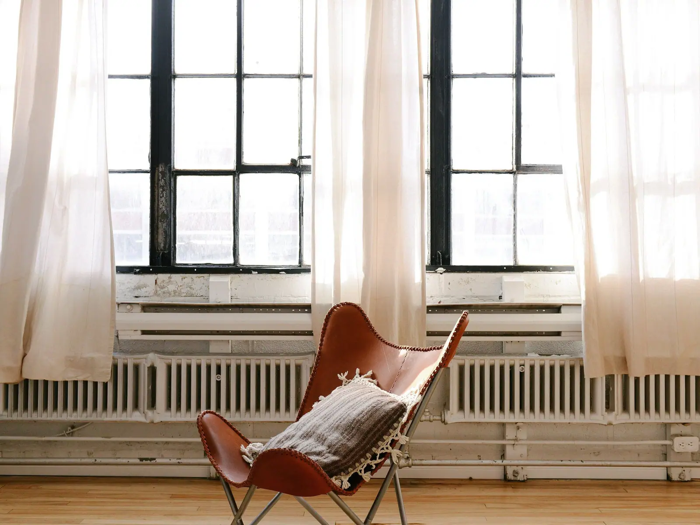
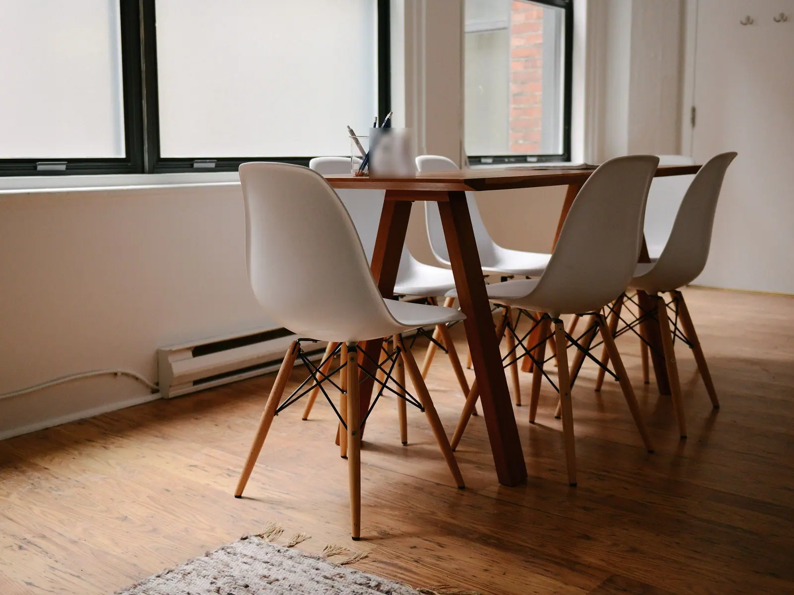
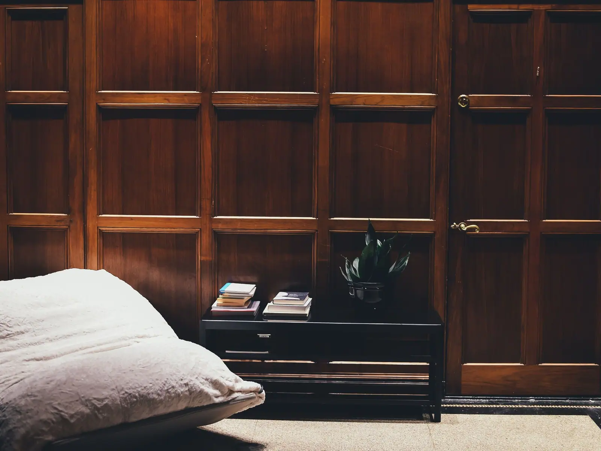
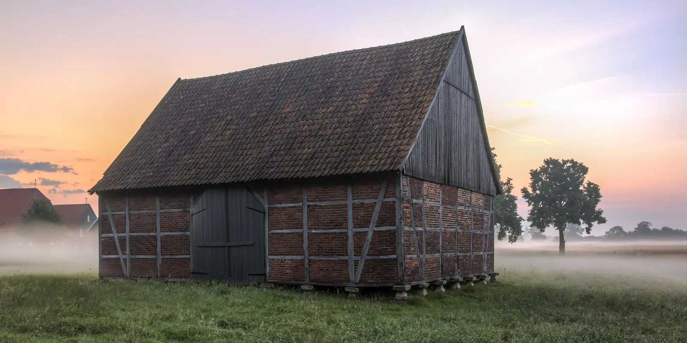

El estudio
12+Años dibujando casas
100%Proyectos a medida
Cada casa que dibujamos es
una conversación entre la arquitectura,
el caserío de siempre y quien va
a vivir en ella. Sin prisa.
Cada proyecto es más que una casa: es una forma de vivir en un sitio. En Gainetik juntamos el oficio de antes, materiales del valle y una atención al detalle que se nota cuando abres la puerta.
Ver proyectos
Sala del pajar
El antiguo pajar, ahora sala con luz de mañana.

Comedor de roble
Mesa para seis. Ventanas al este. Suelo de siempre.

Sala de nogal
Los paneles de siempre, limpios y vueltos a colocar.

Casas hechas
para quedarse
Gainetik es un estudio de arquitectura de Gipuzkoa que dibuja casas unifamiliares y rehabilita caseríos para quien quiere hacerlo bien y sin prisa.
Borda en el prado
Cómo trabajamos
De la parcela a la llave,
con el mismo estudio
en cada paso.
Visita
Vamos contigo a la parcela o al caserío: orientación, accesos, pendiente y lo que permite el ayuntamiento.
Te llevas: lo que se puede hacer y lo que no.
Anteproyecto
Dos o tres propuestas de planta y volumen. Las cambiamos contigo hasta que una sea la tuya.
Te llevas: planos, maqueta y un coste estimado.
Licencia
Proyecto básico y de ejecución. Lo presentamos en el ayuntamiento y contestamos a lo que pidan.
Te llevas: la licencia de obra.
Obra
Comparamos presupuestos de constructores contigo y llevamos la dirección de obra, con visita semanal.
Te llevas: la casa y el final de obra.
Cuéntanos
qué tienes
Una parcela, un caserío cerrado o una casa que se ha quedado pequeña. Te contestamos en dos días laborables.
- Correo
- hola@gainetik.example
- Estudio
- Gipuzkoa, con cita
- Horario
- De lunes a viernes, de 9:00 a 14:00 y de 16:00 a 18:30